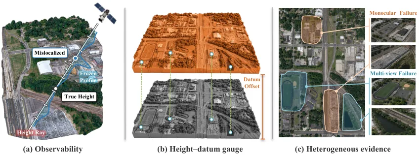
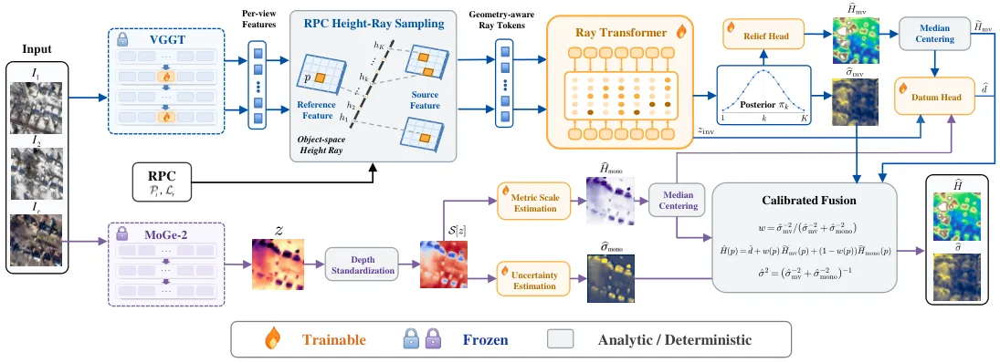
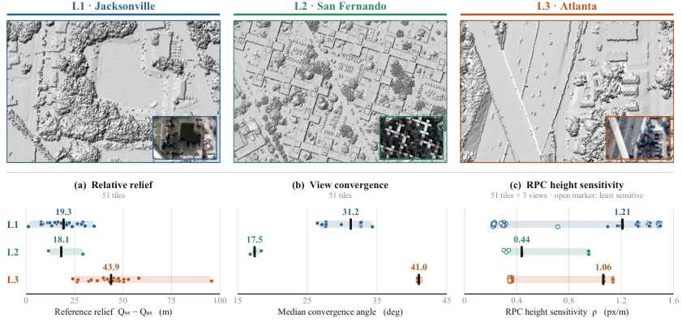
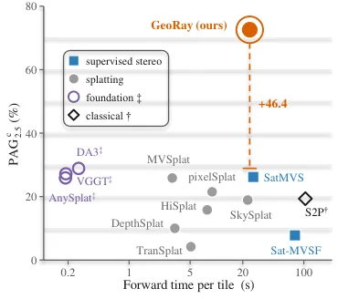
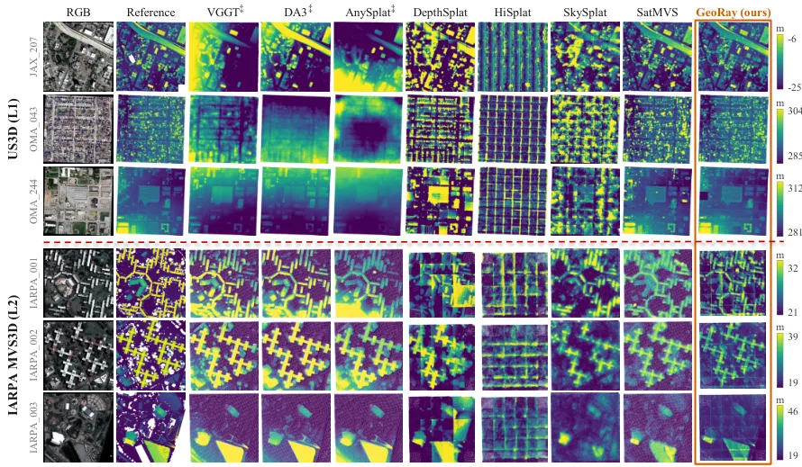
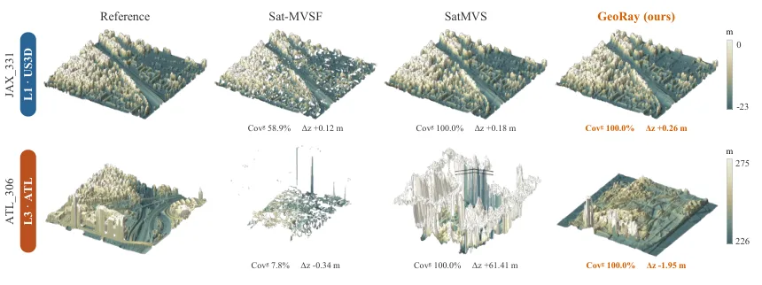

GeoRay：地理测地坐标系中的规范感知前馈卫星三维重建GeoRay: Gauge-Aware Feed-Forward Satellite 3D Reconstruction in the Geodetic Frame
直接命中 Geometry Foundation Models、metric geometry、uncertainty 和 gauge-aware optimization；全文给出 26 个 US3D tile、跨数据集/跨城市、控制点和机制实验。
一句话工作总结
把非中心成像的可观测性、低阶高程—datum gauge 和不确定性融合明确拆开，形成可复用的卫星几何基础模型接口。
完整单篇海报（待补全）
当前记录尚未达到完整海报质量门槛，暂不把摘要或评分理由冒充方法/实验结论。
待补字段：方法本质拆解.note、evidence_sources、研究上下文.authors、研究上下文.lineage、研究上下文.network。下一次任务需从论文全文或官方 HTML 提取证据后再发布。
摘要
GeoRay 针对 RPC 非中心相机，把冻结 VGGT 适配到原生高度射线，并用显式 datum 机制分离地形起伏与绝对高程，再按预测方差融合多视图和单目 relief。SatGauge 在绝对地理坐标、完整度和跨区域迁移下评估零控制、单控制和稀疏控制。
Feed-forward 3D foundation models reconstruct perspective scenes in one pass. Satellite photogrammetry needs a different product, one that domain adaptation alone does not deliver: dense surface height in an absolute geodetic frame under non-central rational polynomial cameras (RPCs). Perspective-pretrained features are not reliably observable along RPC height rays, absolute elevation carries a low-order height--datum gauge exchangeable with sensor bias to first order, and monocular and multi-view cues fail in different regions. \method{} treats all three. Lightweight ray-consistent adapters make a frozen backbone matchable along native RPC rays. An explicit datum mechanism separates relief from absolute level and is equivariant to the vertical origin by construction, so one trained model serves zero-, one-, and sparse-control inference. Calibrated inverse-variance fusion combines the two relief streams. \bench{}, our absolute-frame benchmark of eighteen systems across in-domain, cross-dataset, and cross-city tiers, scores absolute placement without registration or test-reference leakage. On 26 held-out US3D tiles, \method{} attains $2.99$\,m absolute MAE at $91.9\%$ coverage, improves completeness-aware accuracy by $46.4$ points over the strongest compliant feed-forward baseline, remains the most accurate such system under both transfer shifts, and runs in $24$\,s model-forward time per tile. Code and models will be released at https://github.com/HIT-SIRS/GeoRay
中文解读摘录
- 领域：Geometry Foundation Models / 3D Foundation Models；RPC 相机、绝对高程、gauge 与不确定性融合。
- 要点：沿原生 RPC 高度射线适配冻结 VGGT，把 ray-field observability、height–datum gauge 和多源 relief fusion 分开处理。26 个 US3D tiles 上 absolute MAE 为 2.99 m、coverage 为 91.9%、PAGc@2.5 m 为 72.6%，并支持 0/1/10 个控制高度。
- 判断：最贴近可靠状态估计底座的一篇：把传感器模型的不可观测低阶自由度显式化，再用控制和校准不确定性处理可辨识范围。
图表/页面预览
{kind=link}

{kind=link}

{kind=link}

{kind=link}

{kind=link}

{kind=link}
